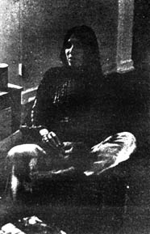

Buffy Ste. Marie lives on a farm in Hawaii, has a house in Maine, and is the wife of a former surfer-now farmer-named Dwayne Kamaikalani Bugbee. Periodically she leaves these havens, visits various reservations around the United States, and gives concerts. The proceeds go to her foundation, Nihewan, which puts native Americans through law school.
Buffy has scored films, acted on television and made a remarkable series of records dealing with Indian complaints against the white man's sorry record of broken promises, genocide and hypocrisy. She has also written some of the loveliest love songs I have ever heard, and is in the process of deciding whether or not she wants to do an evening of her material with a symphony orchestra.
Buffy Ste. Marie is a remarkable woman: A performer who uses the fame her many talents have focused on her to spotlight the problems the American Indian faces today. The fact that she is so keenly aware of how little has been done to make restitution in any form for the wrongs perpetuated by the white American to its host peoples and is still able to write songs of love, peace and simple pleasures is a testament to not only her creative abilities but to her eloquent humanism.
The following interview was recorded during Mrs. Kamaikalani Bugbee's last visit to Los Angeles.
PLOWBOY: You have just returned from a series of visits to various Indian reserves. Did you sense any increase in the anger or militancy among the Indian youth?
BUFFY STE. MARIE: Well, it varied from tribe to tribe, from kid to kid. When I talked to the kids, there would be a lot of shouting and cheering for the statements that had to do with not taking any more of what their fathers had to take in order just to eat. At the same time, though, the kids would be taking part in the traditional ceremonies and attending the " pow wows during the day, then showing up for the rock concerts at night. It's not as if a kid has to choose any particular bag on the reserve.
The kids on the Rocky Boy Reserve in Montana are completely different from the kids at the Navajo Reserve. The kids on the Navajo reserve are not as aware of the Indian people on other reservations. There are so many Navajo people on the Navajo reserve, that I found the people unaware of the problems on other reservations. I found them shocked to hear of the conditions other tribes have to put up with. Then too, the Indians at Wind River would be greatly surprised to find out how well the peoples on the Navajo reserve were doing . Even I was surprised to find them doing so well.
The Navajo reserve is the best set up reserve I have ever seen. It still is not as well set up as a white town-the people there are still poorer than people in white towns, everybody is poorer than people in white towns but it is not as bad as on other reservations
There are so many Navajos that there are many more people to find success stories about. But still there is suddenly this curiosity among the Navajo kids about other Indians. They are ticked off even though they are the wealthiest. At least on their reserve they get a double education (traditional and academic.)
The kids at Rocky Boy take a lot more laying down. Fewer of them speak their own language, more of them drop out of school and there are fewer chances available to them. The doors are just not open to them the way they are to the kids on the Navajo reservation, simply because their parents aren't in a position to offer them what a Navajo parent can offer. Their people are simply not in a position to offer what the Navajo people are able to offer their people.
PLOWBOY: The Bureau of Indian Affairs is now and their awarded large sums of money, supposedly for the welfare of the Indian. What has been their policy of late, and how do they distribute these funds?
BUFFY: The. BIA is carrying out a policy which is "Let them cry themselves to death." Let the Indians starve themselves to death. Ignore them. Let the morale slip so low that the organi zation dissolves, that the leadership begins to fight amongst itself. This is generally the same as the attitude has always been. Divide and conquer. This is the attitude toward Alcatraz certainly.
You see, the BIA exists because the Indians have problems. If these problems were solved then a lot of the BIA white people will lose their jobs. The Bureau is set up by the government to deal with Indians. It is a government organization, not an Indian one. Most people, when they read that $16,000,000 has been allocated to the Bureau, think that the Indian people get the money, but they don't.
When it comes to a nitty gritty choice between the Indians and the Government, the Bureau is the government. If belongs to the government. There are some good things that the Bureau has done for the Indians and when you write to the Government that is what you hear about. You never hear about how John Trudell is holding the Alcatraz thing together. He has been for 11 months, but you hear nothing about him. You hear nothing about Steve Fastwolf, who is putting together a breakfast program for Indian kids in the Chicago ghettos.
PLOWBOY: Nixon has been coming on pretty strong as some sort of champion for the Indians. He backed the Indian land claims recently. How do you see this move?
BUFFY: I think he realized that after he made his statement Congress would back down. He was fairly safe in saying what he did. What else could he say? It is just the same old thing they have been saying for years. Nixon and the Government's words mean nothing to us. The thing you have to watch out is that you don't fall for it. Most white Americans reading what Nixon says he is going to do for the Indians think, "Oh, isn't that nice, this nice man is going to take care of it." Then, they forget about it. ,
PLOWBOY: What effects have the Kennedys had on the young Indians?
BUFFY: Most of the young people know generally where the Kennedys are at. Who was the best of the Kennedys? John, right? Well, who built the Kinzua Dam? He did. Who is chairman of the Senate Subcommittee on Indian Education? Teddy. Who wasn't even going to show up at a conference he promised to attend when thousands of Indian students came, until he had to be embarrassed publicly on TV and showed up? Teddy.
All I can say is that politicians have been putting on war bonnets, shaking rattles and things for twenty minutes out of their lives for years and I want somebody to show me what a politician has done. I am not interested in their promises any more. Politics is politics and Indian people have been used by them for too many years. A greater number of Indians are hipper now than they used to be.
PLOWBOY: How do the BIA people react to you?
BUFFY: Generally the BIA welcomes me the way a member of the John Birch Society would welcome a dignitary from Russia. "Try not to get him killed, but don't listen to anything he says or he might poison your mind."
When I went to Haskell, the BIA Indian vocational school in Kansas, would be the best example. I was going to do a concert at the University of Kansas, which is near by. I asked the people at the University if they would mind if I went to Haskell after the concert and performed just for Haskell students. They phoned back and said that there was a problem. That I couldn't appear there.. When I got to Kansas, I called Haskell and they said, "Sorry you can't come on Sunday;" they said that none of the kids would come anyway, that they were very apathetic. They said that they had everybody, "senators, congressmen, everybody," and nothing came of it.
The kids, I found out, were given a different story. They were told I was going to charge them ten thousand dollars to come out there. Man, I just wanted to go and sing, hang out. So I met some of the kids in front of the Indian bar and told them I would like to come out and sing. They said "really" and the concert was arranged in ten minutes.
It was one of the best feelings I'd ever had at a concert. It was a great, teary concert for everybody. There was a lot accomplished that day. By the time I left I had seen the faces of Indian people that had worked at the college for maybe twenty or thirty years and were probably wondering if they had sold out; these faces cracked, then smiled with the students. Blood runs thicker than ink, I guess, `cause I'm quite sure the teachers are going to have a much closer relationship with the kids; and they work for the BIA.
Generally when I arrive on a reservation the BIA acts the way 1 have described. At the end of the day there will be a spilt on the reservation between the BIA Indian and the BIA non-Indian. There are some BIA people, the few Indian people in the BIA, who are open to things that will help the Indians. But the BIA non-Indian feels threatened `cause he knows I'm out to get his job for a qualified Indian. There is no way to disguise why I am there. It's an open book. The Bureau should be-according to me anyway-100 percent Indian.
PLOWBOY: What help can the non-Indian give to bring that about? The Indians' problems seem a bit overwhelming to many who get involved with the best intentions.
BUFFY: Yes, there are many problems. You can't look at all the tribes' problems at once because the problem looks too big, but people can do much on the local level. That is what we need. Some of the people who all these years have been coming up to people like me and saying, "What can we do for the Indians . . ." if some of those people who are going to become educators, legislators, lawyers or whatever, whose heads are in the right place, were working in the BIA, got to know the Indian people before they started working for the Bureau, chances are they will know what they are doing. Chances are they will know that what they are doing is a TEMPORARY situation for them and eventually the BIA must become an Indian organization rather than paying lip service to Indians and serving the Government. Then we could have the BIA doing work FOR the Indians in two to five years.
I realize that white people, now more than ever, have problems. I don't expect a white boy who's going to law school to give up his life. I don't expect it, but I pray for it every day.
That is the reason my foundation, the Nihewan Foundation, is putting only Indian guys through law school. An Indian guy, in just having lived his twenty years as an Indian, has twenty years "education" on the non-Indian guy. He doesn't have to break down all the barriers. He KNOWS what being an Indian is like. An Indian can't make it in the same position as a white can, not so much because of prejudice as because we don't have the connections. I would really be stoked if we had white lawyers and doctors and dentists but I'm not counting on it. My money is going into the Foundation to help people I KNOW are interested. I'm putting guys through college who can not get scholarships from other sources. What we need is our own guys in court.
PLOWBOY: Could you cite an example of a person who would be getting a scholarship?
BUFFY: Steve Fastwolf probably wouldn't have gotten one elsewhere. He is a Sioux, a great big brawny guy who could be out burning trucks or the White House. He is a big, angry Indian, a smart Indian who knows his people are getting screwed, and what is he doing? He is out providing a breakfast program for kids. He is spending full time on that. If he had to work all summer to convince the scholarship boards that he knew which fork to use in order to get into college we wouldn't have had the breakfast program.
There are a lot of people like Steve all over the country and they are the ones who need the support. My concert fees go into the Foundation so I have no qualms about not doing other people's benefits but we need steady stuff. Somebody to give one percent of their incomes. The only kind of stuff I'm supporting is the sort of thing that keeps people alive.
PLOWBOY: You have spent a good deal of time on Alcatraz. What is the situation there now? How has the morale been holding up?
BUFFY: It is very bad. The water supply has been cut off. No one else in San Francisco has had their water supply shut off except us. I have been sending bottled water over regularly. Morale is, I wouldn't say, low, but the people are cold air time. People are sick, there is no water other than the bottled water to wash dishes or bathe in other than the bottled and it is getting pretty funky.
People have been together in the same cells for eleven months now and the island is small. But Alcatraz is sill better than the average reservation. Any Indian who hasn't been there should go, just for a visit or for the rest of their lives.
The electricity has been shut off. When that was shut off, the lighthouse lights went out too (the Government didn't think about that) and a lot of small boats were stranded out in the bay. A couple of Indian guys went up to the tower and hand cranked the generator so that the lights would work. Then the merchants and the charter boat people heard about it and they said, "Look, we will take you back and forth for free" and when we said, "Let the press come too," the ones that were helping us had their insurance cancelled and their licenses threatened, which is their livelihood, for helping us.
Everyone in San Francisco is very nice-the coast guard, for instance. They come by in their boats, pass by and wave and they smile, but the policy is the same at Alcatraz as on the reservations . . . "starve them out" and "let them cry themselves to death." That mustn't happen. This is what the people must know about Alcatraz.
People must know that the people on Alcatraz are undergoing the severest of political measures in terms of policy. I must say our Government is being very efficient in this. The press is not allowed there unless they pay a $25 charter fee and who wants to spend $25 when there are plenty of stories that can be written for free? The Indians don't know many newsmen who can afford that.
The small boat fishermen have been wonderful. The people of the United States have been wonderful. They have been so much in support of what occurred at Alcatraz that I think the Government is scared. Alcatraz legally belongs to us by treaty and if that treaty is recognized then that would set a precedent in American Indian history. America has never dealt honorably with the Indian and I guess the Government is afraid of that precedent. People have been wonderful, but that is not enough. There are still many things needed on Alcatraz: Food, blankets and a generator. With a generator, there would be electricity. (NOTE: A church in San Francisco has donated a generator.) Anybody who is helping the Indians on Alcatraz is helping people who truly are in prison.
I think Americans, hip and otherwise, are missing the last chance they are ever going to get to soothe their consciences. The guilt I see in white peoples' eyes is a sad thing. It is up to the individual white person to pay the debt. I didn't do anything to make them feel so damn guilty. They made their own guilt. The only way they are ever going to get over this guilt complex is to pay up, individual by individual, then finally as a nation. I think they are missing a wonderful opportunity to completely revamp this country.
There has been, during the past year, a great deal of cross information and testing out of friendships amongst the different minority groups. We are thinking of applying to Israel for aid . . . they were in the same kind of position. Also to Japan, the second richest country in the world, and to France. We have talked to the U.N. but unfortunately have no power. That would be like going to the flea because the dog bit you. It wouldn't do much to help people on the actual reservations There is a lot of work people, as individuals, can do right now.
|
 |
|
|